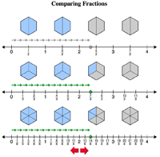

Number Lines
Number Lines
The real number line is a very powerful model for representing relationships between real numbers. The experimental interactive tools below are designed to help students internalize the number line model.
Number Line Tools for Integer Operations
Adding Integers Comparing Subtracting an Integer to Adding the Opposite Comparing the Integer Tile Model to the Real Number Line ModelNumber Line Tools for Operations Involving Fractions
Comparing the Fraction Strip Model to the Real Number Line Model Comparing the Pie Chart Model to the Real Number Line Model (Version I) Comparing the Pie Chart Model to the Real Number Line Model (Version II) Comparing the Polygonal Area Model to the Real Number Line Model  Comparing All Three Area Models to the Real Number Line Model